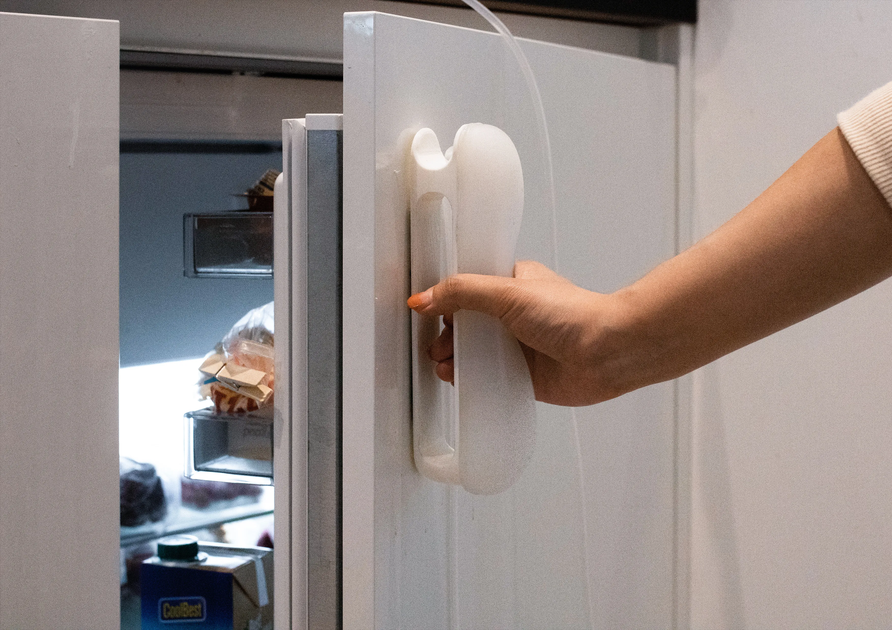
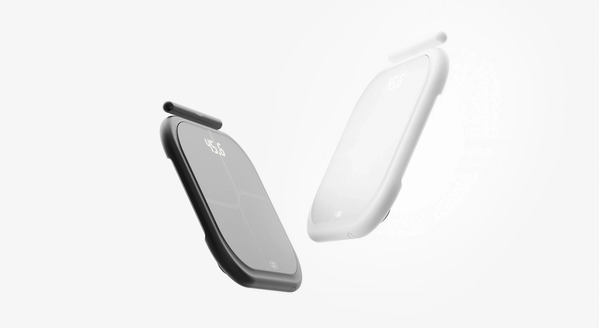

SoundMotionIndustrial Design | Tangible Interaction

DolceResearch Project | Tactile Interaction

MorpheusIndustrial Design | Healthcare

Music LinkerIndustrial Design | Tangible Interaction

Body Fat ScaleProduct Design

Vinylify
UX Research